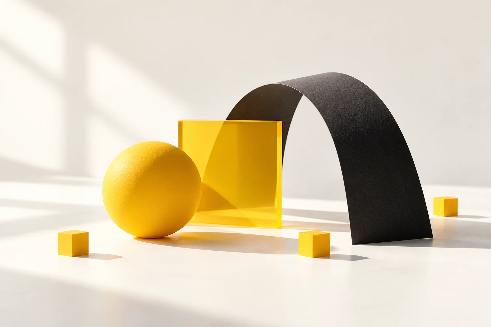

Logo vector reconstruction
Clean, editable artwork rebuilt from existing logo files.
Graphic design & visual creative
Visual solutions for brands, businesses and creative projects.
View work
01 / Selected work
Start a project!Vector artwork, packaging, print and digital campaigns — a selection from my Upwork portfolio.
Clean, editable artwork rebuilt from existing logo files.
Packaging artwork and dielines prepared for print production.
Retail displays and point-of-sale artwork prepared for production.
Magazine layouts and editorial design for print.
Static ad creatives for supplement and direct-to-consumer brands.
Visual content and coordinated social media campaign materials.
Sports-focused media graphics and social campaign design.
Custom thumbnail graphics for YouTube videos.
02 / About
01 / 10
Understanding the goal, the audience and what the design needs to achieve.
I’m János Répás, a graphic designer and web designer with over ten years of experience. At ALDI Hungary and Tarasago, I worked on digital and print materials, brand identities, packaging and campaigns. My work spans social media and web creatives, editorial layouts and retail displays.
I approach design with production in mind: artwork needs to work on screen and in print. I also specialise in vector reconstruction, artwork cleanup, dielines and prepress. Clear visual communication, attention to detail and reliable, production-ready files are central to my work.
Let's collaborate03 / Contact
A new brand identity, packaging or digital campaign? Tell me about your project and let’s find the right visual direction.
Brand identity · Packaging · Digital creatives
Get in touch directly
Tell me what you’re working on, what you need and your timeline. Feel free to include references or existing artwork.